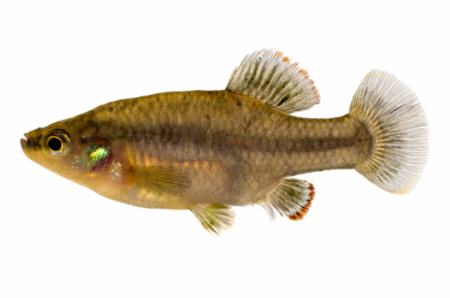

Systématique
- Ordre : Cyprinodontiformes
- Famille : Goodeidae
- Genre : Zoogoneticus
- Espèce : Z. purhepechus
- Auteur : Domínguez-Domínguez et al., 2008

Zoogoneticus purhepechus est un petit poisson vivipare matrotrophe, longtemps confondu avec Z. quitzeoensis avant sa description officielle en 2008. Il appartient à un genre de Goodeidae connu pour ses patrons de coloration contrastés et son comportement dynamique.
Le mâle atteint environ 4 à 5 cm de longueur standard, tandis que la femelle est plus robuste et peut mesurer jusqu'à 6 cm. Le corps est compact et compressé latéralement. La coloration est complexe : une base olive-argentée marquée par deux rangées de taches sombres sur les flancs. Les nageoires dorsale et anale des mâles matures sont ornées d'une bordure rouge-orangé éclatante, soulignée par une ligne noire, ce qui les rend particulièrement attractifs.
L'espèce est classée "En danger" (EN) par l'UICN. Sa distribution est très fragmentée dans l'ouest du Mexique, et elle subit une pression constante due à la perte d'habitat, à la pollution des sources et à la compétition avec des espèces invasives telles que Pseudoxiphophorus bimaculatus.
Zoogoneticus purhepechus est un poisson vif, nageur actif et doté d'un tempérament curieux. Bien que pacifique dans un environnement spacieux, les mâles peuvent se montrer très territoriaux et combatifs entre eux pour établir une dominance ou attirer les femelles. Ils déploient leurs nageoires colorées lors de parades latérales rapides.
Il apprécie les zones d'eau calme à courant lent, riches en végétation aquatique submergée. En aquarium, il nécessite un décor structuré avec des plantes denses (Ceratophyllum, Vallisneria) pour offrir des refuges aux individus dominés et aux femelles. Il est sensible à la qualité de l'eau et aux variations brusques de température.
Mode : Vivipare matrotrophe.
La reproduction suit le cycle caractéristique des Goodeinae. Le mâle utilise son andropodium pour la fécondation interne. Les embryons sont nourris à l'intérieur de l'ovaire via des trophotaeniae. La gestation dure environ 50 à 60 jours en fonction de la température.
Les portées sont modestes, produisant généralement entre 10 et 25 alevins. Les nouveau-nés sont de grande taille (environ 12-14 mm) et sont capables de se nourrir de nauplies d'artémias ou de nourriture fine dès la naissance. Bien que les adultes soient moins cannibales que certains autres genres, il est prudent de prévoir une végétation dense ou des mousses pour protéger les jeunes les premiers jours.
Dimorphisme sexuel : Bien marqué. Le mâle possède un andropodium (encoche sur la nageoire anale) et des bordures rouges/orangées très vives sur les nageoires impaires. La femelle est plus grande, plus massive et présente des couleurs beaucoup plus ternes.
Espérance de vie : 3 à 5 ans en aquarium.
L'espèce est endémique des bassins fluviaux des Rios Lerma, Grande de Santiago, Armería et Coahuayana, dans les États de Michoacán, Jalisco, Colima et Nayarit. Elle fréquente principalement les sources claires (ojos de agua) et les ruisseaux peu profonds.
L'habitat se caractérise par des eaux alcalines et de dureté moyenne à élevée. Les températures naturelles oscillent généralement entre 18 et 24 °C. La présence de végétation aquatique abondante est cruciale, tout comme un substrat composé de sable, de gravier et de roches couvertes de biofilm.
Répartition

Origine naturelle :
- Mexique : Bassins des Rios Lerma, Santiago, Armería et Coahuayana.
- États de Michoacán, Jalisco, Colima et Nayarit.
- Endémique des plateaux et versants du centre-ouest mexicain.
C'est l'un des goodeidés ayant la plus large distribution historique, mais les populations actuelles sont extrêmement isolées les unes des autres par la dégradation des corridors fluviaux.
Paramètres de maintenance
Température : 18 à 24 °C. Éviter les chaleurs constantes au-delà de 26 °C.
pH : 7,0 à 8,2.
GH : 10 à 20 °dGH.
Courant : Faible à modéré.
Volume conseillé : 80 L pour un groupe, bac bien oxygéné et richement planté.
Régime alimentaire
Régime : Carnivore à tendance insectivore.
En aquarium, il accepte les nourritures sèches de haute qualité, mais nécessite un apport régulier en proies vivantes ou congelées (daphnies, artémias, vers de vase) pour maintenir sa vigueur et ses couleurs. Il consomme également des petits invertébrés trouvés dans le décor.